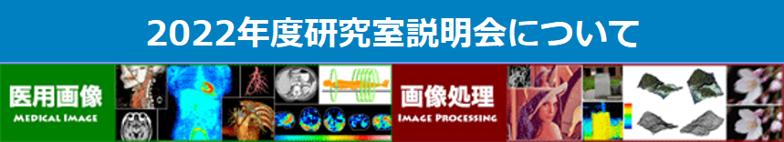

本研究室では，画像・映像・マルチメディア信号処理と医用画像について研究を行っています．
お知らせ
2022年10月：研究室説明会はオンデマンドにて実施します．詳細はこちら
更新情報
- 2020年9月
- 工藤博幸教授が日本医用画像工学会(JAMIT)の学会長に就任．詳細はこちら
- 2020年3月
- 当研究室学生が情報学群長賞を受賞．詳細はこちら
- 2020年2月
- 当研究室学生が映像情報メディア学会研究奨励賞を受賞．詳細はこちら
- 2019年9月
- 2019年度研究室説明会を実施します．詳細はこちら
- 2019年9月
- 当研究室学生が日本医用画像工学会大会（JAMIT）大会奨励賞を受賞．詳細はこちら
- 2019年3月
- 当研究室学生が情報メディア創成学類長賞を受賞．詳細はこちら
- 2019年3月
- 当研究室学生が情報科学類長賞（心青会賞）を受賞．詳細はこちら
- 2018年9月
- 当研究室学生が日本医用画像工学会大会（JAMIT）大会奨励賞を受賞．詳細はこちら
- 2018年4月
- 工藤博幸教授が文部科学大臣表彰を受賞．詳細はこちら
- 2018年3月
- 当研究室学生が情報メディア創成学類長賞を受賞．詳細はこちら
- 2017年10月
- 2017年度研究室説明会を実施します．詳細はこちら
- 2017年3月
- 当研究室学生が情報科学類長賞（心青会賞）を受賞．詳細はこちら
- 2017年2月
- 当研究室学生が電子情報通信学会信号処理若手奨励賞を受賞．詳細はこちら
- 2017年2月
- SPIE（国際光工学会）Medical Imaging 2017国際会議において『Poster Presentation Award』を受賞．詳細はこちら
- 2016年9月
- 当研究室学生が日本医用画像工学会大会（JAMIT）大会奨励賞を受賞．詳細はこちら
- 2016年9月8日
- 2016年度研究室説明会を実施します．詳細はこちら
- 2015年9月29日
- 2015年度研究室説明会を実施します．詳細はこちら
- 2015年5月18日
- 研究室学生が医用画像研究会研究奨励賞を受賞．詳細はこちら
- 2015年4月15日
- ホームページをリニューアルしました．
- 2015年4月11日
- 「量子ビーム位相イメージングプロジェクト筑波大画像解析グループ」にかかる研究員を募集中．詳細はこちら
- 2015年4月10日
- 当研究室出身者が助教採用される．詳細はこちら
- 2014年10月14日
- 工藤教授らが画像再構成ソフトウェア"ISER"を製品化．詳細はこちら
- 2014年9月27日
- 工藤教授に電子情報通信学会フェローの称号が贈呈される．詳細はこちら